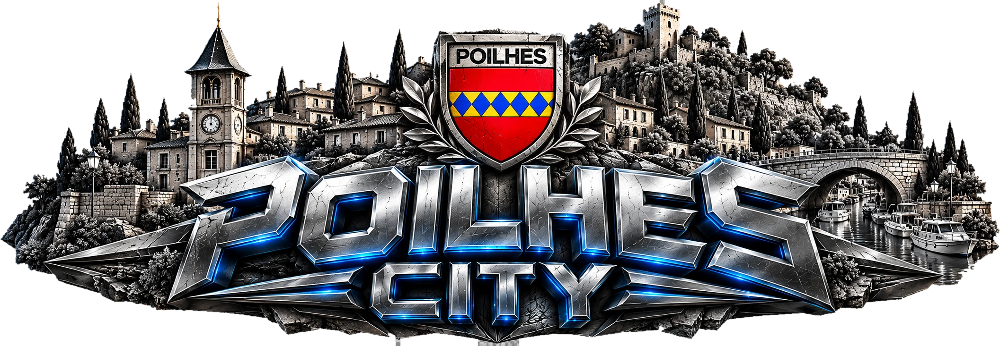

Trottinette et berline dans les rues du village, reconstruit d’après le LiDAR et les photos de l’IGN.
Flèches ou ZQSD · Espace saute · en l’air F looping, G 360 · P au skatepark · V caméra

Trottinette et berline dans les rues du village, reconstruit d’après le LiDAR et les photos de l’IGN.
Flèches ou ZQSD · Espace saute · en l’air F looping, G 360 · P au skatepark · V caméra
Le village se construit…